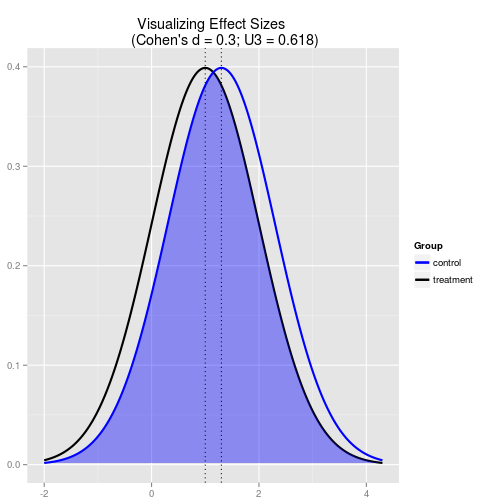
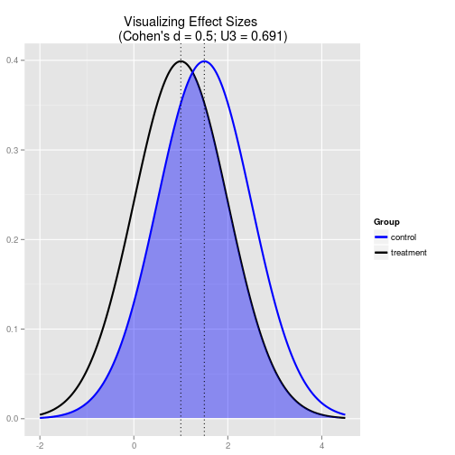
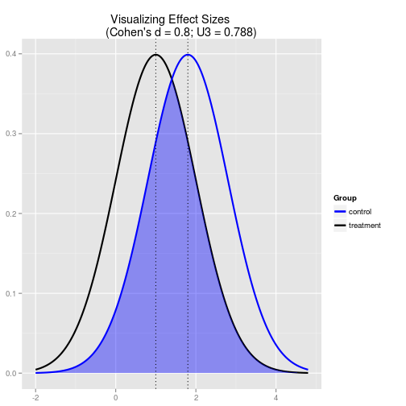

Downloads
Henrique Gomide
CREPEIA, PET - Psicologia
Downloads
dados <- read.csv(file.choose(), header=TRUE, sep=",")
library(pwr) # Basic functions for Power Analysis
cohen.d(0.3) # pequeno

cohen.d(0.5) # médio

cohen.d(0.8) # grande

Para realizar amostragem (ou pedir para alguém fazê-la):